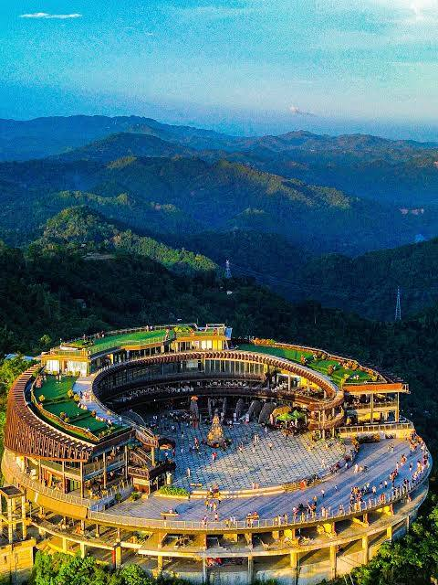
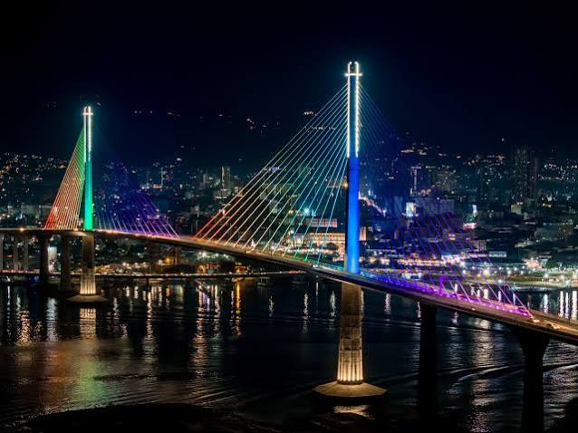

Perched high in the hills of Busay, this iconic observation deck recently underwent a massive multi-year renovation, reopening as a modernized entertainment hub. It features sweeping, unobstructed 360-degree views of Cebu City, Mactan Island, and the sea.

Perched over 100 meters above sea level at the NUSTAR Resort Cebu, this thrilling new glass-bottomed walkway offers a breathtaking 360-degree panoramic view of the Metro Cebu skyline, the Mactan channel, and the ocean. It is a premier location for stunning photography and a high-altitude adrenaline rush.

Located right beside the SM Seaside Complex, this is Cebu’s newest and largest outdoor family entertainment and play park. It features over 30 unlimited rides, giant rainbow-colored slides, and multi-generational interactive zones making it the premier family day-out spot in the city.

Inaugurated in a beautifully restored century-old Customs building near Plaza Independencia, this museum contains five expansive galleries celebrating Cebu's unique biodiversity, archaeological treasures, and fine arts. It is completely free to enter and highly interactive.

Cebu’s most iconic weekend night market has moved into a massive, upgraded venue within Cebu IT Park. Operating from late afternoon until midnight, it brings together dozens of food vendors serving local lechon, international street foods, and creative drinks under festive string lights.

The Cebu-Cordova Link Expressway (CCLEX) is the longest toll bridge in the Philippines. While it serves as a highway, it has become a major fun attraction at night when its massive twin pylons and cable-stays light up in brilliant, changing colors, creating a scenic modern backdrop best viewed from coastal boardwalks.

The largest marine-themed park in the Philippines, located at the South Road Properties. Visitors can walk through a massive 360-degree underwater tunnel surrounded by sharks and rays, interact with exotic birds, or even book an exclusive aqua-dining experience right in front of the giant aquarium walls.
Back to the choices.